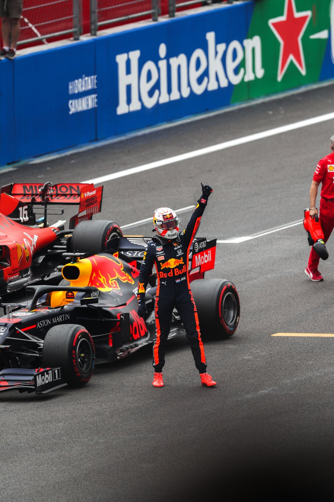
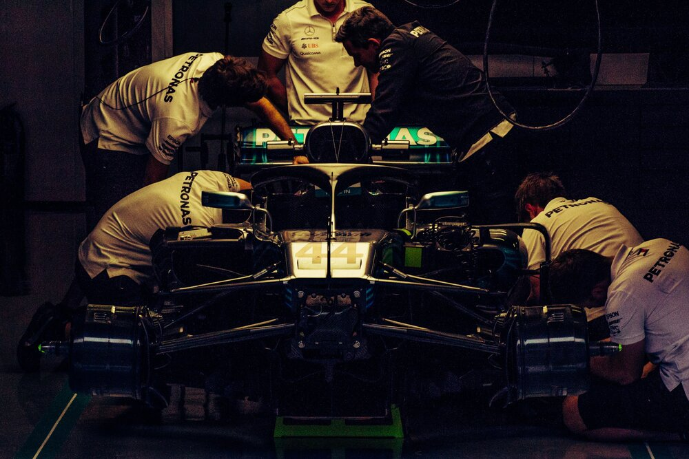

Points System
In the current point system, drivers must finish among the first ten to receive points. Those who finish outside the top ten are not awarded any points. There can be one exception though, the driver that set the fastest lap gets one point regardless of what place he finished in. 1st place gets 25 points, 2nd gets 18, 3rd gets 15, 4th gets 12, 5th gets 10, 6th gets 8, 7th gets 6, 8th gets 4, 9th gets 2, and 10th gets 1. The points scored by a driver are added at the end of the season, and the driver that has scored the most points is awarded the World Drivers' Championship.
Racing Teams
Racing teams, also referred to as constructors, can also be awarded points depending on the performance of their cars during the race. The constructor that aggregates maximum points will be crowned with the World Constructors’ Championship. Formula one teams, or constructors, have two starting drivers and a couple of reserve drivers. Each team has their own structure with employees in different areas such as engineering, manufacturing, and race strategy. The number of employees varies from constructor to constructor, but typically established teams employ around 1,200 people.
Flag System
There are different colored flags that signal different events or circumstances to drivers during a session. A yellow flag symbolizes a hazard on track, a red flag means a session is suspended, and a green flag means the race can resume. A black flag signals a driver that they have been disqualified from the session. Many other colored flags exist but they are less crucial as the ones mentioned above.